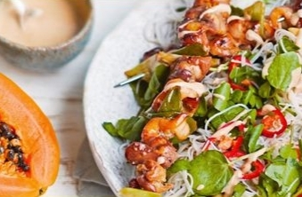
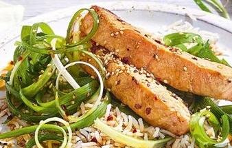
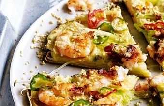
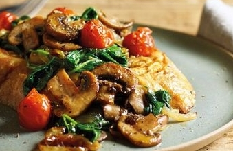
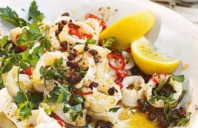

We provide you healthy and delicious food that you won't have to maintain your diet for rest of your
life. Imagine a full healthy life without diet, such a dream come true moment
About Us
We deliver the most delicious and healthy food around the whole country. We have several brunch in almost
all the district to serve you food as fast as possible. We cook our food with our own grown vegetables.
We also provide fresh fruits and vegetables without any delivery fee. So contact us now!
Our Recipie
Plan for any occasion with food from My Food Network. Read up on recipes ideas for
party favorites like cake,
ice cream and appetizers. Whether you're making some comfort food at home or are getting ready to feed a
crowd, you have The Food Network ready
and waiting to help you pull it off!

Chicken and papaya satay noodles recipe
Preheat the grill to a high temperature. For 5 minutes, marinate the chicken in soy sauce, sugar, and
fish sauce. Place the onion........

Salmon and spring onion salad recipe
In a large mixing basin, combine all of the marinade ingredients. Place the salmon fillets in the fridge
for at least 30 minutes to marinade. Fill a bowl with cold water and papper in a mixing basin........

Korean prawn and spring onion pancake recipe
In a bowl, combine the dipping sauce ingredients and set aside.Combine the flours with a fair teaspoon of
salt and pepper in a mixing basin.........

Mushroom eggybread recipe
Preheat the oven to 200°C, fan 180°C, gas 6. Roast the cherry tomatoes for 10 minutes on a baking tray.
Once softened and blistered, set aside and keep warm.........

Sticky garlic squid recipe
In a nonstick frying pan, heat the 2 tsp oil over medium-high heat and cook the capers for 30 seconds, or
until crispy. Using a slotted spoon, remove the chicken........
hortbreads with lemon icing recipe
Preheat the oven to 200°C, fan 180°C, gas 6. Mix the sugar and butter in a mixing bowl until light and
fluffy, then addUsing a slotted spoon Using a slotted spoon .......
700K
YouTube Subscriber
2.4M
Instagram Followers
100K
Dribble Shot Likes
Contact Us
The Food Network
Eat healthy to live healthy. Live healthy to live happy.